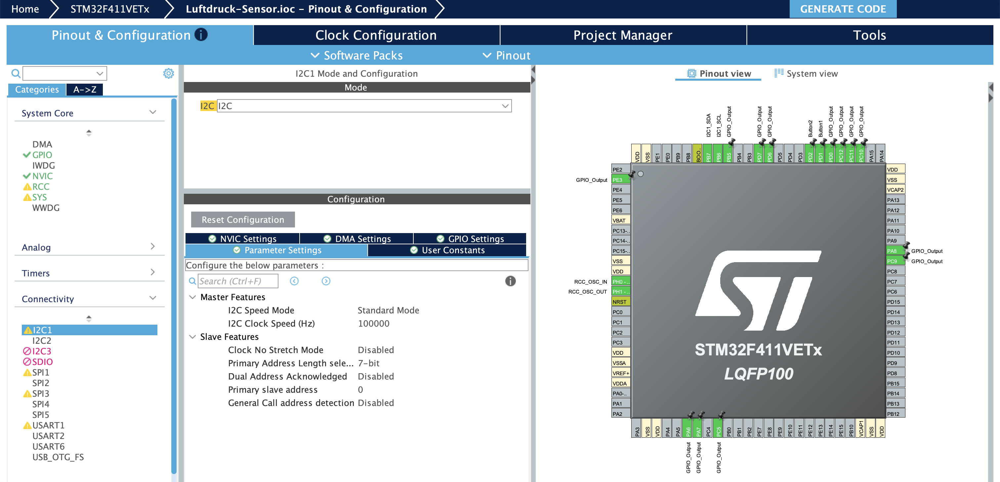
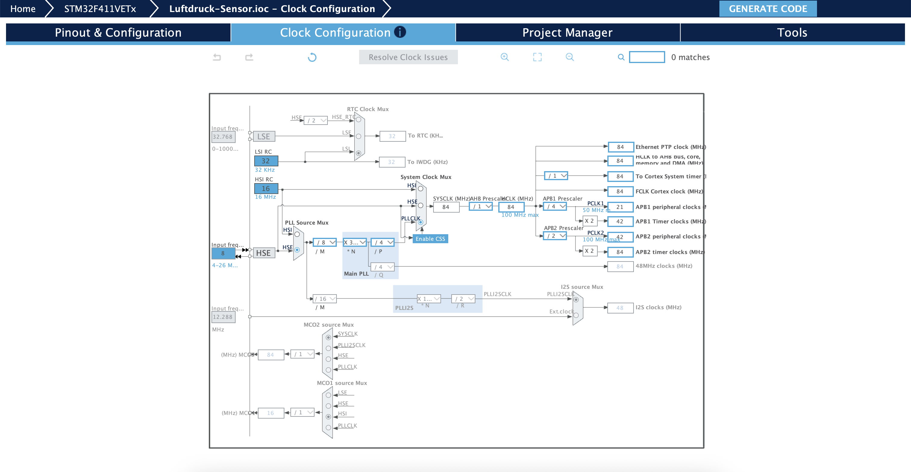
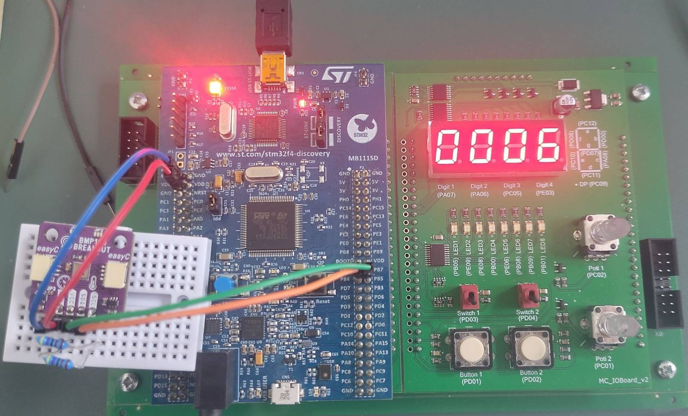
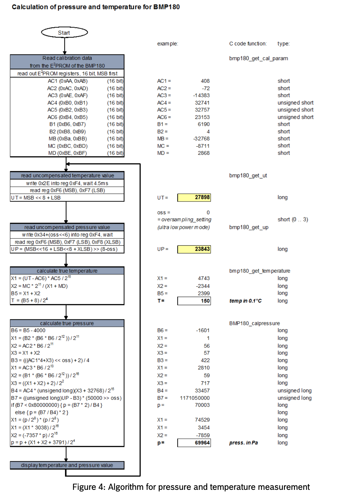
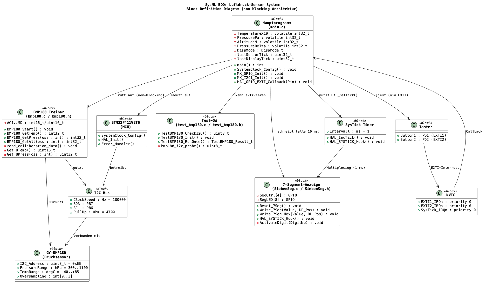
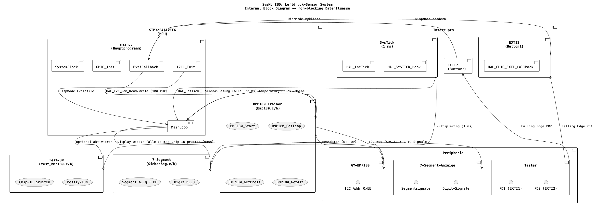

- Generated by
 1.9.8
1.9.8
|
Luftdruck Sensor Projekt: GY-BMP180 mit STM32F4 Discovery Board
|
LVA: Angewandte Mikrocontrollerprogrammierung UE, SS26
Jahrgang: AE27 (4. Semester)
Gruppe: 3 – Sensor für Luftdruck GY-BMP180
Ziel: Messen Sie Änderungen des Luftdrucks und zeigen Sie diese an.
| Nr | Aufgabe | Status |
|---|---|---|
| 1 | Analyse der Funktionen der jeweiligen Komponente (Datenblatt aus Web besorgen!) | [x] |
| 2 | Anschluss der jeweiligen Komponente an den STM32 über die Schnittstelle, die der jeweilige Sensor bereithält | [x] |
| 3 | Inbetriebnahme und (nachweisliche!) Lösung der gestellten Aufgabe | [x] |
| 4 | Geeignete Visualisierung der Ergebnisse unter Zuhilfenahme des E/A-Boards (7-Segmentanzeige, LED, usw.) oder eines 2004-LCD-Displays | [x] |
| 5 | Erstellung einer Test-SW auf dem STM32, wobei die Bedienung der jeweiligen Komponente in wiederverwendbare Funktionen ausgelagert sein muss | [x] |
| 6 | Dokumentation von Anschluss, Funktion, Parametern, Randbedingungen usw. sowie der SW | [x] |
Der BMP180 ist ein digitaler Barometer- und Temperatursensor der Firma Bosch Sensortec. Er wird auf dem Modul GY-BMP180 als Breakout-Board betrieben. Der Sensor misst den absoluten Luftdruck und die Umgebungstemperatur und gibt die Rohdaten über eine I²C-Schnittstelle aus.
Datenblatt: BST-BMP180-DS000-09 (Adafruit / Bosch Sensortec)
| Parameter | Wert |
|---|---|
| Versorgungsspannung (VDD) | 1,8 V – 3,6 V |
| I²C-Adresse (Write) | 0xEE (CSB = High) |
| I²C-Adresse (Read) | 0xEF |
| Druckbereich | 300 hPa – 1100 hPa |
| Druckgenauigkeit (absolut) | +/-0,12 hPa (Hochauflösungsmodus) |
| Druckauflösung | 0,01 hPa (0,17 Pa) bei Oversampling = 3 |
| Temperaturbereich | –40 °C bis +85 °C |
| Temperaturauflösung | 0,1 °C |
| Stromaufnahme (Messung) | typ. 5 uA (Ultra-Low-Power) |
| Standby-Strom | typ. 0,1 uA |
| Wandlungszeit (Temperatur) | 4,5 ms |
| Wandlungszeit (Druck, oss=0) | 4,5 ms |
| Wandlungszeit (Druck, oss=3) | 25,5 ms |
| Schnittstelle | I²C (max. 3,4 MHz) |
Der BMP180 basiert auf einem piezoresistiven Druckmesszellen-Element. Eine dünne Siliziummembran verformt sich unter Druckeinwirkung; die resultierende Widerstandsänderung wird in ein elektrisches Spannungssignal umgesetzt. Über einen internen A/D-Wandler (ADC) werden die Rohspannungen digitalisiert.
Da die Kennlinie des Drucksensors temperaturabhängig und von Exemplar zu Exemplar leicht unterschiedlich ist, sind im Sensorwerk individuelle Kalibrierkoeffizienten in einem EEPROM abgelegt (Adressbereich 0xAA–0xBF, 22 Byte = 11 x 16 Bit). Ohne diese Koeffizienten kann aus den Rohwerten keine korrekte physikalische Größe berechnet werden.
Die Kalibrierkoeffizienten umfassen:
| Koeffizient | Typ | Verwendung |
|---|---|---|
| AC1, AC2, AC3 | signed 16 Bit | Temperatur- und Druckkompensation (lineare Terme) |
| AC4 | unsigned 16 Bit | Skalierungsfaktor für Druckberechnung |
| AC5, AC6 | unsigned 16 Bit | Temperaturberechnung (Multiplikatoren/Offsets) |
| B1, B2 | signed 16 Bit | Nichtlineare Druckkorrektur |
| MB, MC, MD | signed 16 Bit | Temperaturkorrekturkonstanten |
Der BMP180 kommuniziert ausschließlich über den I²C-Bus. Die Übertragungsrate wird auf 100 kHz (Standard-Modus) konfiguriert, was für die Abtastrate von 2 Hz völlig ausreichend ist.
Die I²C-Adresse des Moduls beträgt 0xEE (Write) bzw. 0xEF (Read) bei unbeschaltetem CSB-Pin (CSB = High).
Laut Datenblatt sind externe 4,7 kOhm-Pull-up-Widerstände auf SDA und SCL erforderlich, da die STM32F4-Discovery-Board-internen Pull-ups zu schwach für die Buskapazität sind.
| MCU-Pin | Funktion | Verbunden mit |
|---|---|---|
| PB6 | I2C1_SCL (AF4) | BMP180 SCL |
| PB7 | I2C1_SDA (AF4) | BMP180 SDA |
| PA6 | GPIO_OUT | 7-Segment Digit 1 |
| PA7 | GPIO_OUT | 7-Segment Digit 0 |
| PA8 | GPIO_OUT | 7-Segment Segment c |
| PC5 | GPIO_OUT | 7-Segment Digit 2 |
| PC9 | GPIO_OUT | 7-Segment DP |
| PC10 | GPIO_OUT | 7-Segment Segment e |
| PC11 | GPIO_OUT | 7-Segment Segment d |
| PC12 | GPIO_OUT | 7-Segment Segment a |
| PD0 | GPIO_OUT | 7-Segment Segment b |
| PD1 | EXTI1 (Eingang) | Button 1 (Modusumschaltung) |
| PD2 | EXTI2 (Eingang) | Button 2 (Modusumschaltung) |
| PD6 | GPIO_OUT | 7-Segment Segment f |
| PD7 | GPIO_OUT | 7-Segment Segment g |
| PE3 | GPIO_OUT | 7-Segment Digit 3 |

Abbildung 1: Screenshot der CubeMX Konfiguration, Pinout

Abbildung 2: Screenshot der CubeMX Konfiguration, Clock
Im Auslieferungszustand läuft der STM32F411VET6 nach Reset mit dem internen HSI-Oszillator bei 16 MHz; die PLL und der externe HSE-Quarz sind dabei zunächst noch nicht aktiv.
Für dieses Projekt wird der Controller aber bewusst mit einem 8 MHz HSE-Quarz betrieben, weil damit eine präzise und stabile Zeitbasis zur Verfügung steht, die genug Rechenreserve für Sensorwert-Berechnung und Anzeige bietet. Die zulässigen Taktbereiche ergeben sich aus dem STM32F411-Datenblatt und dem Reference Manual; die konkrete Einstellung stammt aus der CubeMX-Konfiguration.
Gleichzeitig ergeben sich saubere Taktverhältnisse für die Peripherie, insbesondere für den I²C-Bus und das SysTick-Intervall. HSE steht für High Speed External und bezeichnet den externen Haupttaktgeber. Über die PLL (Phase-Locked Loop) wird dieser präzise Eingangstakt vervielfacht und die Systemtaktfrequenz auf 84 MHz hochgesetzt:
HAL_Delay). Stattdessen wird über HAL_GetTick() die Systemzeit abgefragt und Tasks nur ausgeführt, wenn ihr Intervall abgelaufen istDas System wurde erfolgreich in Betrieb genommen. Die gemessenen Werte liegen im erwarteten Bereich:
| Größe | Typischer Wert | Bereich |
|---|---|---|
| Luftdruck | ~994 hPa (Wien, ~171 m ü.NN.) | 980-1020 hPa |
| Temperatur | ~22-26 °C (Raumtemperatur) | abhängig von Umgebung |
| Höhe | ~0-266 m (rel. zum Referenzdruck) | +/-500 m (Näherung) |
Durch vorsichtiges Drücken auf die Sensormembran oder Erwärmen des Sensors mit der Hand können Druck- bzw. Temperaturänderungen sichtbar gemacht werden.

Abbildung 3: Finaler Aufbau mit BMP180 und STM32F4 Discovery Board
Die Visualisierung erfolgt über die 4-stellige 7-Segment-Anzeige auf dem FH-Übungsboard. Die Ansteuerung erfolgt mit der Bibliothek SiebenSeg.h/SiebenSeg.c von FH-Prof. Herbert Paulis.
Ansteuerungsprinzip: Multiplexing über SysTick-1ms-Interrupt (HAL_SYSTICK_Hook()).
GPIO-Belegung der 7-Segment-Anzeige:
| Funktion | GPIO | Belegung |
|---|---|---|
| Digit 0 (links) | PA7 | Ziffernauswahl |
| Digit 1 | PA6 | Ziffernauswahl |
| Digit 2 | PC5 | Ziffernauswahl |
| Digit 3 (rechts) | PE3 | Ziffernauswahl |
| Segment a | PC12 | Anzeige |
| Segment b | PD0 | Anzeige |
| Segment c | PA8 | Anzeige |
| Segment d | PC11 | Anzeige |
| Segment e | PC10 | Anzeige |
| Segment f | PD6 | Anzeige |
| Segment g | PD7 | Anzeige |
| Dezimalpunkt | PC9 | Anzeige |
Die Anzeige wird über zwei Taster gesteuert:
Button 1 (PD1): Wechselt zwischen Luftdruck (DISP_PRESSURE) und Druckänderung (DISP_DELTA).
Button 2 (PD2): Schaltet zyklisch durch: Temperatur -> Höhe -> Druck -> Temperatur -> ...
| Modus | Anzeige | Beispiel | Format |
|---|---|---|---|
| DISP_PRESSURE | Druck in bar | 0.994 | 4 Ziffern, DP links |
| DISP_DELTA | Druckänderung in Pa | 0050 = 50 Pa | 4 Ziffern, kein DP |
| DISP_TEMPERATURE | Temperatur in °C | 08.30 = 8,30 °C | 4 Ziffern, DP an Pos. 1 |
| DISP_ALTITUDE | Höhe in Metern | 0266 = 266 m | 4 Ziffern, kein DP |
Skalierung für die Anzeige (Integer-Arithmetik):
PressureBarX1000 = (PressurePa + 50) / 100 0.994 bar)*TempX100 = TemperatureX10 * 10 25.30 °C)*Bei negativen Temperaturen wird keine Zahl angezeigt, da die 7-Segment-Anzeige keine negativen Vorzeichen darstellen kann.
Beide Taster werden über EXTI-Interrupts (External Interrupt) erkannt und softwareseitig mit einer Entprellzeit DEBOUNCE_MS entprellt:
Die Test-SW wurde als wiederverwendbare, modulare Bibliothek implementiert, bestehend aus:
Core/Inc/test_bmp180.h** – öffentliche Schnittstelle (Deklarationen + Datenstrukturen)Core/Src/test_bmp180.c** – Implementierung aller TestfunktionenDie Testlogik ist vollständig von der Hauptapplikation entkoppelt. Sie kann über das Compile-Flag BMP180_TEST aktiviert werden.
TestBMP180_CheckI2C()** – Liest das Chip-ID-Register (0xD0) und prüft auf Wert 0x55. Damit wird die korrekte Verdrahtung und Erreichbarkeit des Sensors bestätigt.TestBMP180_Init()** – Ruft BMP180_Start() auf (lädt Kalibrierdaten) und führt eine erste Druckmessung als Referenz durch.TestBMP180_RunOnce()** – Führt einen vollständigen Messzyklus durch:Der Test-Modus wird über das CMake-Flag BMP180_TEST aktiviert. Am einfachsten ueber den VS Code Task **"Build and Flash Test"**.
Manuell:
Das erzeugt ein Binary, das nach dem Flashen sofort die Test-Ergebnisse auf der 7-Segment-Anzeige zeigt.
Der Test-Modus zeigt die Ergebnisse direkt auf der 7-Segment-Anzeige – kein Debugger nötig.
Ablauf:
| Anzeige | Bedeutung |
|---|---|
E1 | I²C-Fehler: Sensor nicht erreichbar (Verdrahtung prüfen) |
E2 | Lesefehler: Sensor antwortet, aber Messwert ist 0 (defekter Sensor) |
22.3 | Temperatur: 22,3 Grad C (2 Sekunden) |
0.994 | Druck: 0,994 bar = 994 hPa (2 Sekunden) |
0276 | Höhe: 276 m (2 Sekunden) |
Die Werte wechseln alle 2 Sekunden automatisch durch.
Laufzeit-I²C-Überwachung: Der Test prüft vor jedem Anzeigewert erneut die I²C-Verbindung. Wenn während des Tests ein Kabel abgesteckt wird, wechselt die Anzeige sofort zu E1. Wird das Kabel wieder angesteckt, liest der Test die Sensorwerte neu ein und zeigt wieder Temp/Druck/Höhe an. Das demonstriert die Fähigkeit des Systems, Hardware-Fehler zur Laufzeit zu erkennen und sich davon zu erholen.
E2 testen: E2 ist ein theoretischer Fehlerfall (Sensor antwortet auf I²C, liefert aber Druck = 0). In der Praxis tritt er kaum auf. Zum Testen kann in test_bmp180.c Zeile 59 temporaer r.ok = 0; gesetzt werden.
Fehlersuche:
E1 → I²C-Verbindung prüfen (SDA/SCL, Pull-ups, 3,3 V)E2 → Sensor defekt oder I²C-Kommunikation gestörtDie Sensor-Bibliothek in Core/Inc/bmp180.h und Core/Src/bmp180.c stellt folgende öffentliche Funktionen bereit:
Diese Funktionen sind vollständig wiederverwendbar und können in jedes STM32-Projekt übernommen werden, das einen BMP180 an I²C1 angeschlossen hat.
Interrupts (asynchron zur Hauptschleife):
Schleife im Main Code:
| HAL-Funktion | Zweck |
|---|---|
HAL_I2C_Mem_Read() | Liest per I²C aus einem Sensorregister |
HAL_I2C_Mem_Write() | Schreibt per I²C in ein Sensorregister |
HAL_GPIO_WritePin() | Setzt einen GPIO-Pin auf High/Low |
HAL_GPIO_EXTI_IRQHandler() | Bearbeitet externe Interrupts (Taster) |
HAL_Delay() | Blockierende Verzögerung in ms |
HAL_GetTick() | Systemzeit (ms) seit Start |
HAL_IncTick() | Wird im SysTick-Interrupt erhöht |
| Parameter | Wert | Begründung |
|---|---|---|
| I²C-Takt | 100 kHz | Ausreichend für 2-Hz-Abtastrate, niedriger Stromverbrauch |
| Oversampling (oss) | 0 | Minimale Wandlungszeit (4,5 ms), bei 500 ms Abtastintervall ausreichend |
| Sensor-Abtastintervall | 500 ms | BMP180 benötigt ~10 ms pro Messzyklus (Temp + Druck) |
| Display-Update-Intervall | 10 ms (100 Hz) | Flackerfreie Anzeige, schnelle Reaktion auf Taster-Druck |
| I²C-Pull-up | 4,7 kOhm | Datenblatt-Empfehlung, notwendig für zuverlässige Kommunikation |
| Kalibrierdaten | 22 Byte / 11 Koeffizienten | Werden beim Start einmalig ausgelesen |
| Höhen-Näherung | linear: dh = (p0-p)*8434/p0 | Ausreichend für kleine Höhenunterschiede (< 500 m) |
| SysTick | 1 ms | Grundlage für HAL_GetTick() und 7-Segment-Multiplexing |
| Taster-Entprellung | 200 ms (im EXTI-Callback) | Verhindert mehrfaches Auslösen durch Prellen |
| Interrupt-Prioritäten | SysTick=0, EXTI1=0, EXTI2=0 | Gleiche Priorität, SysTick hat Vorrang als System-Timer |
Alle Berechnungen erfolgen in vorzeichenbehafteter Integer-Arithmetik (32 Bit), um FPU-Latenzen zu vermeiden und die Portabilität auf Cortex-M0/M3 zu erhalten.

Abbildung 4: Kompensationsalgorithmus für Druck und Temperatur (Datenblatt S. 15)
Die barometrische Höhenformel
wurde aus Performance-Gründen durch eine lineare Näherung ersetzt:
Diese Näherung ist für kleine Höhenunterschiede (dh < 500 m) ausreichend genau und benötigt keine Gleitkomma- oder Potenzfunktionen.
Optional kann eine bekannte Referenzhöhe (KnownAltitudeMeters in main.c) angegeben werden. Beim ersten Messzyklus wird daraus der äquivalente Meeresspiegeldruck rückgerechnet:
Ist KnownAltitudeMeters = 0, wird der erste gemessene Druck als lokaler Referenzdruck verwendet (Relativmodus).
Eine Luftdruckänderung ist im Alltag meist nur eine kleine, langsame Verschiebung des Messwerts:
| Änderung | Interpretation |
|---|---|
| Druck sinkt über Stunden/Tage | Mögliches Tiefdruckgebiet -> instabileres Wetter |
| Druck steigt langsam | Hochdruckgebiet -> stabiles Wetter |
| Druckänderung > 100 Pa/h | Deutliche Wetteränderung wahrscheinlich |
| Temperaturänderung durch Handwärme | Gut sichtbar auf der Anzeige |
Das Projekt bildet diese Änderungen durch PressureDelta (in Pascal) ab. Die 7-Segment-Anzeige zeigt wahlweise den Absolutdruck, die Temperatur, die Höhe oder die momentane Druckänderung.
docs/HAL_manual_F4_Mar_2023.pdf)Das System wurde in der Systems Modeling Language (SysML) modelliert. Die Modelle befinden sich im Verzeichnis docs/sysml/ und können mit PlantUML gerendert werden:
Das BDD zeigt die Systemarchitektur auf Blockebene:

Abbildung 5: SysML Block Definition Diagram – Systemarchitektur
Das IBD zeigt die Daten- und Signalfüsse zwischen den Komponenten:

Abbildung 6: SysML Internal Block Diagram – Daten- und Signalfüsse